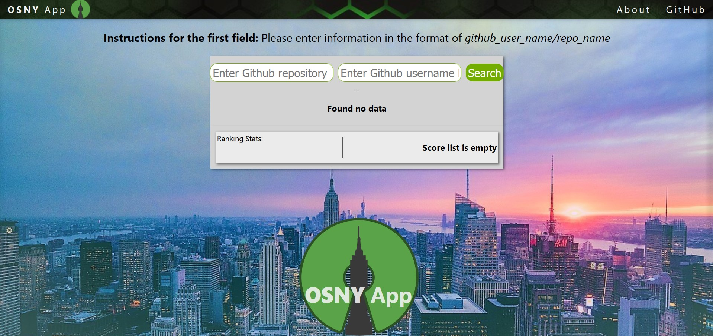

My Portfolio

Journaly
An online journal for individuals who wants to fight depression by having users share their emotions and eventually getting paired with a counselor.

Eye Squared See
An Arduino project that aims to test and improve hand-eye coordination by having players simultaneously focus their eyes and hands on a moving LED and colored buttons.

Open Source New York
An open source web application that tracks all pull requests of a specific user in a GitHub repository.